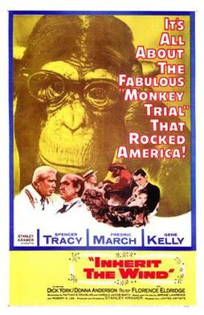

THE STANFORD THEATRE
Now Showing
·
Upcoming
·
Past
·
Search
January 13 - March 26, 2006
Winter 2006
22 bills
January 13 - 14
The Sound of Music (1965)
174 min
January 15
The Sound of Music (1965)
174 min
January 20 - 21
The Sound of Music (1965)
174 min
January 22
The Sound of Music (1965)
174 min
January 27 - 28
Gone With the Wind (1939)
238 min
January 29
Gone With the Wind (1939)
238 min
February 3 - 4
Gone With the Wind (1939)
238 min
February 5
Gone With the Wind (1939)
238 min
February 10 - 11
Casablanca (1942)
102 min
The Maltese Falcon (1941)
101 min
February 12
Casablanca (1942)
102 min
The Maltese Falcon (1941)
101 min
February 17 - 18
Seven Brides for Seven Brothers (1954)
104 min
Calamity Jane (1953)
97 min
February 12
Seven Brides for Seven Brothers (1954)
104 min
Calamity Jane (1953)
97 min
February 24 - 25

Inherit the Wind (1960)
123 min
East of Eden (1955)
115 min
February 26
Inherit the Wind (1960)
123 min
East of Eden (1955)
115 min
March 3 - 4
Treasure of the Sierra Madre (1948)
126 min
To Have and Have Not (1944)
96 min
March 5
Treasure of the Sierra Madre (1948)
126 min
To Have and Have Not (1944)
96 min
March 10 - 11
The Thin Man (1934)
91 min
Top Hat (1935)
101 min
March 12
The Thin Man (1934)
91 min
Top Hat (1935)
101 min
March 17 - 18
The Gay Divorcee (1934)
107 min
After the Thin Man (1936)
108 min
March 19
The Gay Divorcee (1934)
107 min
After the Thin Man (1936)
108 min
March 24 - 25
Swing Time (1936)
103 min
Song of the Thin Man (1947)
83 min
March 26
Swing Time (1936)
103 min
Song of the Thin Man (1947)
83 min